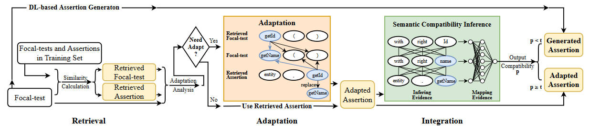
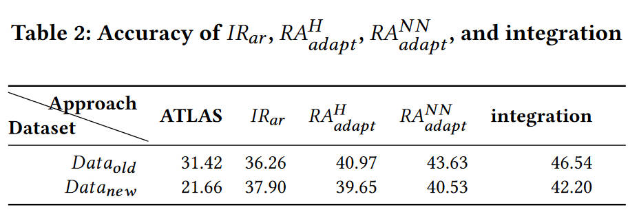
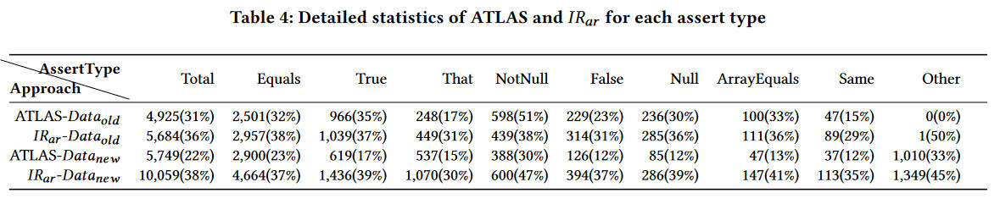
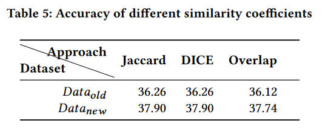
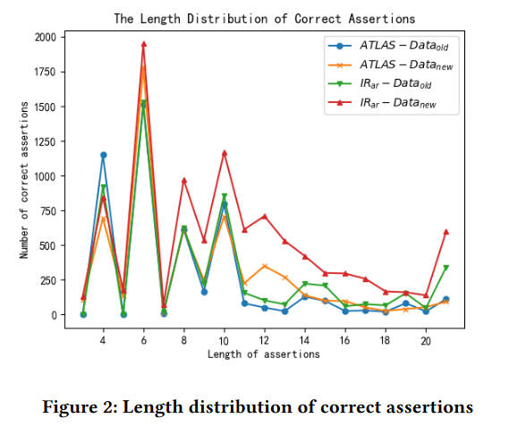
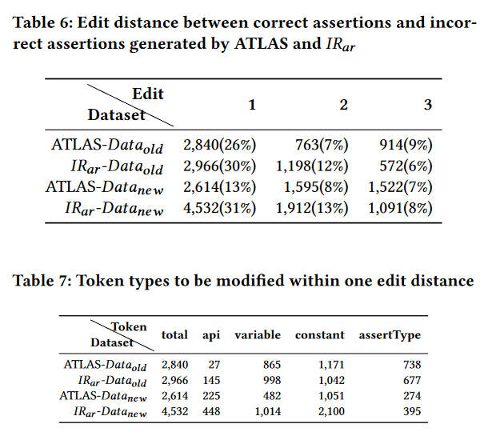
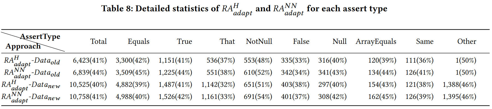
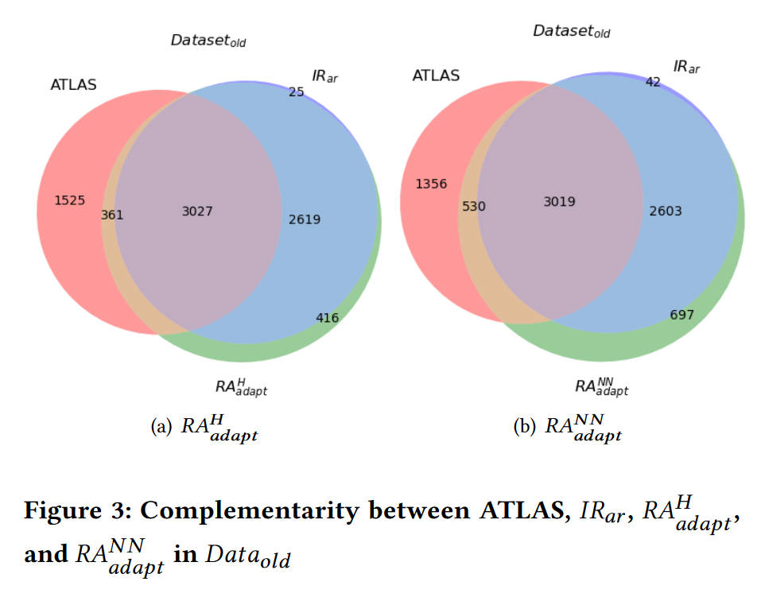
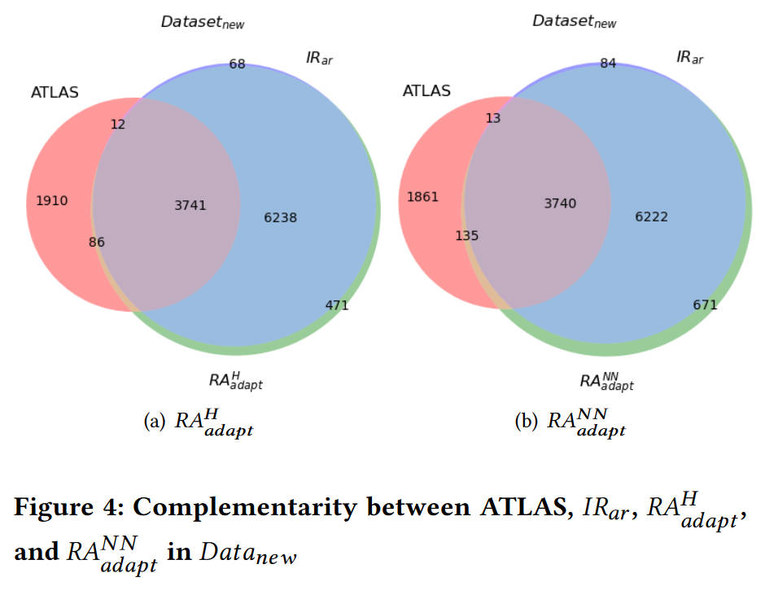
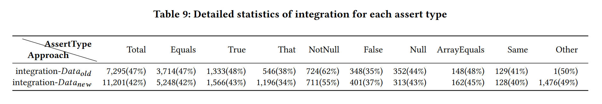

<!DOCTYPE html>
<html lang="en">
  <head>
    <meta charset="utf-8" />
    <meta name="viewport" content="width=device-width, initial-scale=1.0, maximum-scale=1.0, user-scalable=no" />

    <title>利用信息检索的自动断言生成和它与深度学习的集成</title>
    <link rel="shortcut icon" href="./favicon.ico" />
    <link rel="stylesheet" href="./dist/reset.css" />
    <link rel="stylesheet" href="./dist/reveal.css" />
    <link rel="stylesheet" href="./dist/theme/league.css" id="theme" />
    <link rel="stylesheet" href="./css/highlight/tomorrow-night-bright.css" />


  </head>
  <body>
    <div class="reveal">
      <div class="slides"><section  data-markdown><script type="text/template">
<style type="text/css"> 
p { text-align: left; } 
src {float: left}
</style> 

## <p align="center">Automated Assertion Generation via Infomation Retrieval and Its Integration with Deep Learning</p>
<br/>
<ul>
    <li>Authors:&emsp;Hao Yu,Yiling Lou,etc</li>
    <li>Published in:&emsp;ICSE'22</li>
    <li>keywords:&emsp;Unit Testing, Information Retrieval, Test Assertion, Deep Learning</li>
</ul>
<br/><br/>
<div align="right">汇报人：王小娅&emsp;&emsp;&emsp;</div>
<div align="right">汇报时间：2022.10.27</div>
---

## <p>Outline</p>
### <p>1. Introduction</p>
### <p>2. Approach</p>
### <p>3. Experiment</p>
### <p>4. Conclusion</p>
### <p>5. Threats to Validity</p>

---

## <p>1. Introduction</p>

---


### <p>&emsp;Assertion</p>

```[5]
	@Test(timeout=4000)
	public void testGetRoot() {
		Heap_Item<Integer> item0 = new Heap_Item<Integer>(0);
		Pairing_Heap<Integer> ph = new Pairing_Heap<Integer>(item0);
		assertSame(item0,ph1.getRoot());
	}
```

<br/>

### <p>&emsp;approachs of generating assertions</p>
<p>&emsp;&emsp;1. Capture and assert&emsp;(e.g. Randoop and EvoSuite)</p>
<p>&emsp;&emsp;2. Differential testing&emsp;(e.g. DiffGen)</p>
<p>&emsp;&emsp;3. DL based&emsp;(e.g. ATLAS)</p>

---

***<p>&emsp;Merits of ATLAS</p>***
<p>&emsp;&emsp;1. Can generate assertions for detecting non-crashing faults</p>
<p>&emsp;&emsp;2. For the code under test in form of source code</p>

<br/>

***<p>&emsp;Demerits of ATLAS</p>***
<p>&emsp;&emsp;1. Un-explainable</p>
<p>&emsp;&emsp;2. Poor effectiveness of long assertions</p>

```
assertEquals("-4 -3 -2 -1 0 1 2 3 4",bstTree.serializeInfix());
```

---

## <p>2. Approach</p>

---

## <p>1. An approach based on information retrieval</p>
<p>&emsp;step1. The technique of IR-based assertion retrieval</p>
<p>&emsp;step2. The technique of retrieved-assertion adaption</p>

## <p>2. Integration approach</p>
<p>&emsp;Integrating IR-based approach and ATLAS</p>

---

## <p>IR-based approach</p>

---
<div>an introduction to focal test</div>
<br/>

```
//focal-test: 
testReportErrorOnWrongDateEffective () { 
  java.lang.String drl="rule␣X␣date -effective␣\"9-asbrdfh -1974\"␣ when\n"+ (("\$s:␣String()"+"then\n") + "end\n"); 
  org.kie.internal.builder.KnowledgeBuilder kb = org.kie.internal.builder.KnowledgeBuilderFactory.newKnowledgeBuilder(); 
  kb.add(new org.drools.core.io.impl.ByteArrayResource(drl.getBytes()), ResourceType.DRL); 
} 
hasErrors(){ 
  return (errors) != null; 
} 
//Assertion to generate: 
org.junit.Assert.assertTrue(kb.hasErrors())
```

---

*<p>IR-based Assertion Retrieval 𝐼𝑅𝑎𝑟 - basic idea</p>*
<br/>
<p>To retrieve the assertion whose corresponding focal-test has the highest similarity with the given focal-test.</p>
<p>Details in next page</p>

---

*<p>Algorithm 1 IR-based Assertion Retrieval 𝐼𝑅𝑎𝑟 </p>*
<br/>
```
Input: 𝑇𝑒𝑠𝑡𝑓 : the focal-test to generate assertion for. 
Input: 𝑇𝑟𝑎𝑖𝑛𝐹 : all focal-tests in the training set. 
Input: 𝑇𝑟𝑎𝑖𝑛𝐴: all corresponding assertions in the training set. 
Output: 𝑅𝑒𝑡𝑟𝑖𝑒𝑣𝑒𝑑𝑓 : the focal-test retrieved by 𝐼𝑅𝑎𝑟 . 
Output: 𝑅𝑒𝑡𝑟𝑖𝑒𝑣𝑒𝑑𝑎: the assertion retrieved by 𝐼𝑅𝑎𝑟 . 

 1: 𝑚𝑎𝑥 ← 0 , 𝑅𝑒𝑡𝑟𝑖𝑒𝑣𝑒𝑑𝑓 ← “”, 𝑅𝑒𝑡𝑟𝑖𝑒𝑣𝑒𝑑𝑎 ← “” 
 2: for 𝑖 = 1 to 𝑙𝑒𝑛(𝑇 𝑟𝑎𝑖𝑛𝐹 ) do 
 3:     𝑗𝑎𝑐𝑐𝑎𝑟𝑑 ← 𝑐𝑜𝑚𝑝𝑢𝑡𝑒 (𝑇 𝑒𝑠𝑡𝑓 ,𝑇 𝑟𝑎𝑖𝑛𝐹 [𝑖]) 
 4:     if 𝑗𝑎𝑐𝑐𝑎𝑟𝑑 > 𝑚𝑎𝑥 then 5: 𝑚𝑎𝑥 ← 𝑗𝑎𝑐𝑐𝑎𝑟𝑑 
 6:         𝑅𝑒𝑡𝑟𝑖𝑒𝑣𝑒𝑑𝑓 ← 𝑇 𝑟𝑎𝑖𝑛𝐹 [𝑖] 
 7:         𝑅𝑒𝑡𝑟𝑖𝑒𝑣𝑒𝑑𝑎 ← 𝑇 𝑟𝑎𝑖𝑛𝐴 [𝑖] 
 8: return 𝑅𝑒𝑡𝑟𝑖𝑒𝑣𝑒𝑑𝑓 , 𝑅𝑒𝑡𝑟𝑖𝑒𝑣𝑒𝑑𝑎
```

---

<p>However,it is very conmmon for two similar focal-tests to share similar(but not identical) assertions.</p>

---

*<p>Retrieved-Assertion Adaptation RAadapt - basic idea</p>*
<br/>
<p>Change "almost correct" assertions to correct assertions</p>
<p>adaptation procedure can be divided into three steps</p>

1. decide whether the assertion should be modified.
2. decide which token should be modified.
3. decide what value a candidate token should be replaced with.(Addition and deletion are not under consideration for the time being)

<p>tokens fall into three categories: invoked method, variable, constant</p>

---

## Retrieved-Assertion Adaptation RAadapt - example
in the test set
```
//focal-test: 
should_build_an_entity_with_the_right_name(){
   builder.setName("name"); 
   org.bonitasoft.engine.identity.model.SCustomUserInfoDefinition entity
   = builder.done(); 
}
getName(){ 
  return name;
} 
// Assertion: 
org.junit.Assert.assertEquals("name", entity.getName());
```
in the training set
```
//focal-test: 
should_build_an_entity_with_the_right_id(){ 
  builder.setId(1L); 
  org.bonitasoft.engine.identity.model.SCustomUserInfoDefinition entity 
  = builder.done(); 
} 
getId(){ 
  return id; 
} 
// Assertion: 
org.junit.Assert.assertEquals(1L, entity.getId());
```


---

## <p>Integration approach</p>

<p>The approach based on information retrieval could be highly effective when there are similar cases in the training set</p>
<p>DL-based approach is capable of generating "new" assertions absent from the training set</p>
<p>Why not combine the two?</p>

---

## Workflow of the integration approach

<p>If the semantic compatibility adapted assertion is not high enough, then choose the generated assertion.</p>

---

## <p>3. Experiment</p>

---

## *<p>dataset</p>*
<br/>
<p>Data<sub>old</sub> : original dataset used by ATLAS &emsp;&emsp;156,760 data items</p>
<br/>
<p>Data<sub>new</sub> : based on Data<sub>old</sub>, adding cases with unkonwn(absent from the focal-test and vocabulary) &emsp;&emsp;265,420 data items</p>

---

## *<p>metrics</p>*
<br/>
<p>Accuracy:&emsp;only the assertion that is same with ground truth would be considered as accurate.</p>
<br/>
<p>BLEU:&emsp;evaluate the similarity of generated assertions with the ground truth</p>

---

## *Research Questions*
1. RQ1:Effectiveness of IR<sub>ar</sub>
2. RQ2:Effectiveness of RA<sub>adapt</sub>
3. RQ3:Effectiveness of Integration

---
RQ1:Effectiveness of IR<sub>ar</sub>
<br/>



---




---





---

RQ2:Effectiveness of RA<sub>adapt</sub>
<br/>


---

RQ3:Effectiveness of Integration
<br/>


---



---



---

## <p>4. Conclusion</p>

---

## <p>5. Threat to validity</p>


---

# Thanks for watching
</script></section></div>
    </div>

    <script src="./dist/reveal.js"></script>

    <script src="./plugin/markdown/markdown.js"></script>
    <script src="./plugin/highlight/highlight.js"></script>
    <script src="./plugin/zoom/zoom.js"></script>
    <script src="./plugin/notes/notes.js"></script>
    <script src="./plugin/math/math.js"></script>
    <script>
      function extend() {
        var target = {};
        for (var i = 0; i < arguments.length; i++) {
          var source = arguments[i];
          for (var key in source) {
            if (source.hasOwnProperty(key)) {
              target[key] = source[key];
            }
          }
        }
        return target;
      }

      // default options to init reveal.js
      var defaultOptions = {
        controls: true,
        progress: true,
        history: true,
        center: true,
        transition: 'default', // none/fade/slide/convex/concave/zoom
        plugins: [
          RevealMarkdown,
          RevealHighlight,
          RevealZoom,
          RevealNotes,
          RevealMath
        ]
      };

      // options from URL query string
      var queryOptions = Reveal().getQueryHash() || {};

      var options = extend(defaultOptions, {"width":1520,"height":950,"margin":0.04,"transition":"convex","slideNumber":true}, queryOptions);
    </script>


    <script>
      Reveal.initialize(options);
    </script>
  </body>
</html>
